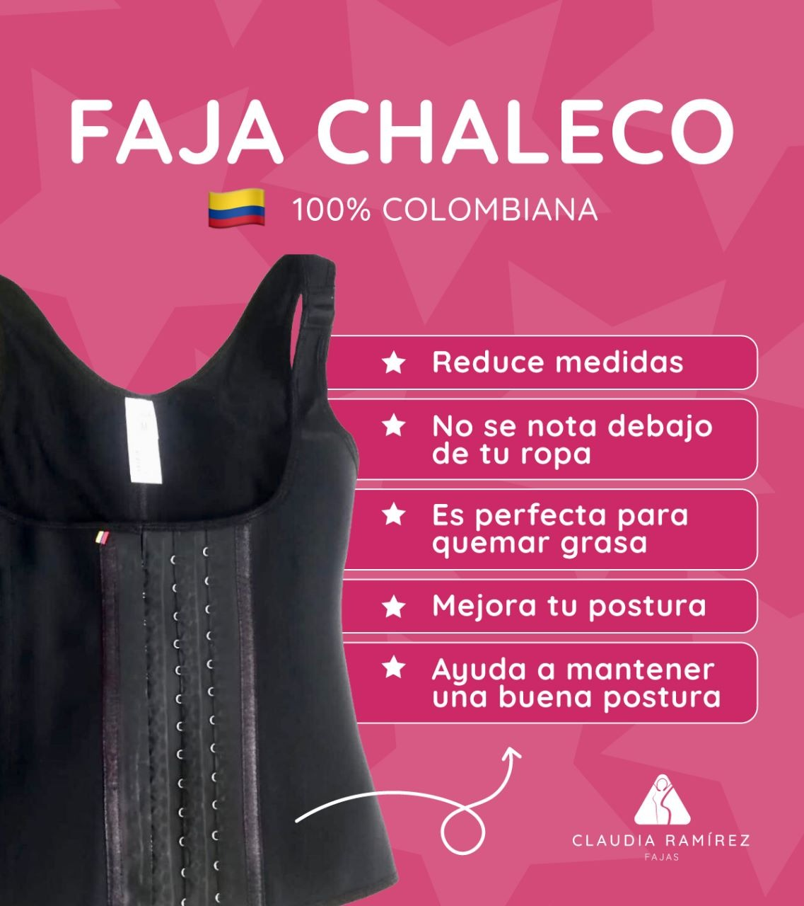
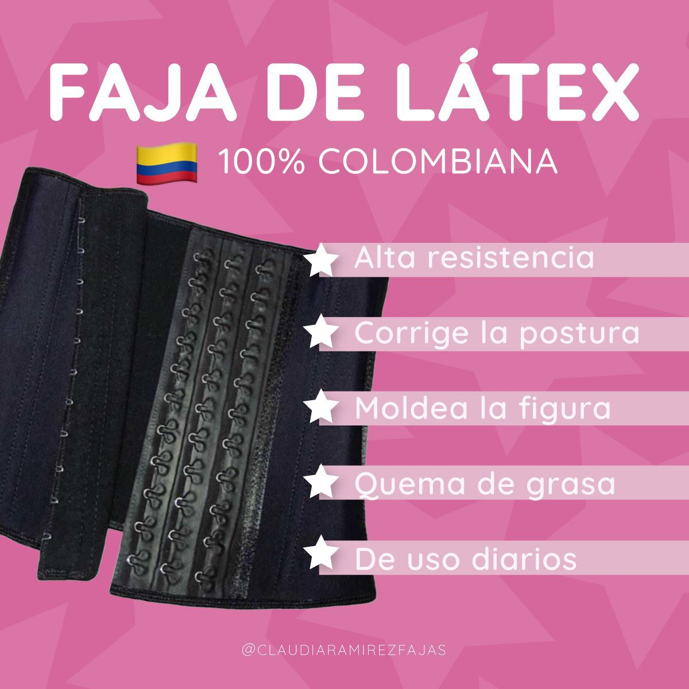
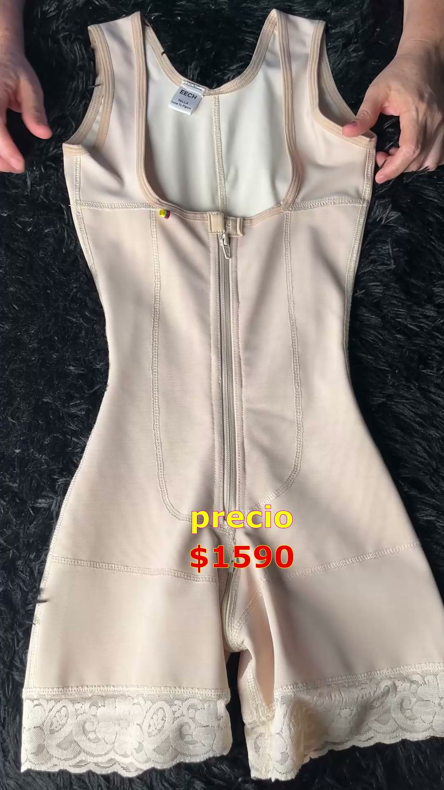
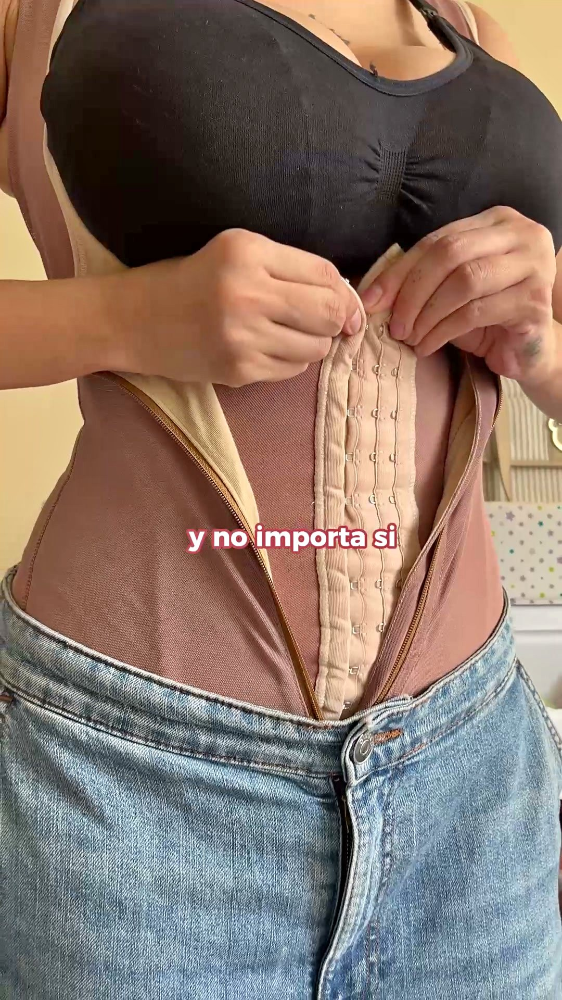
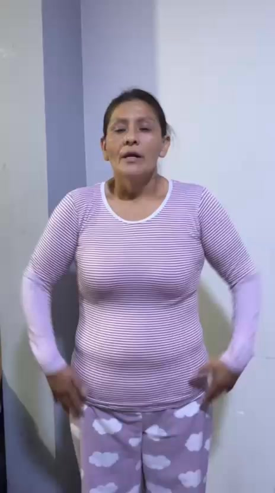
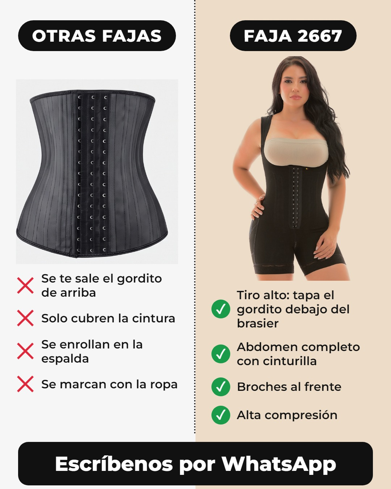
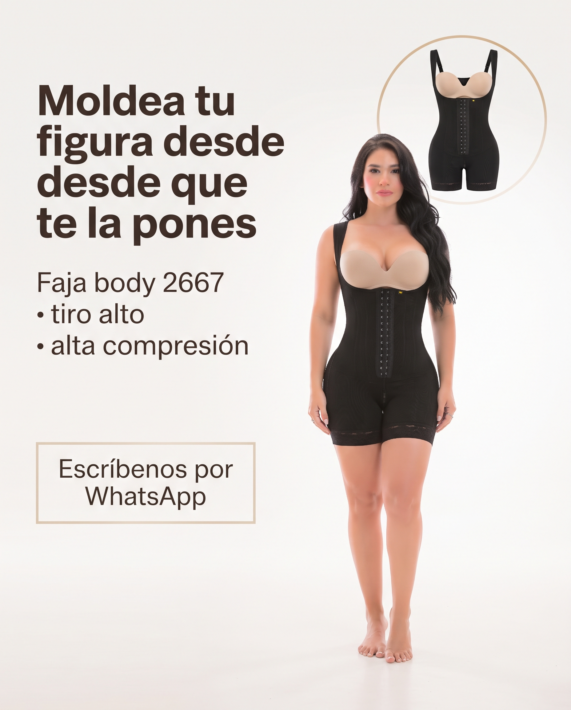
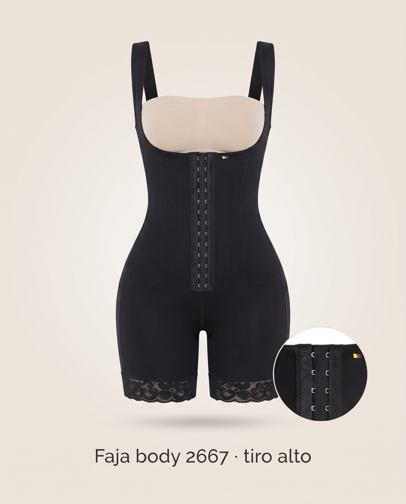
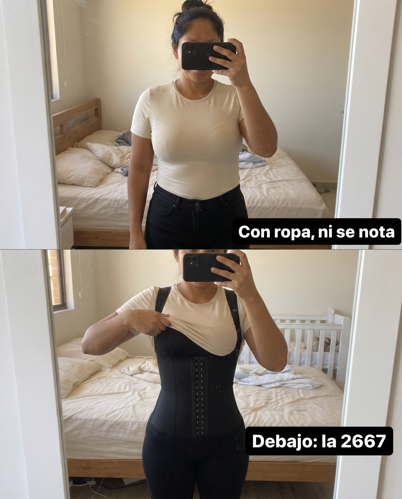
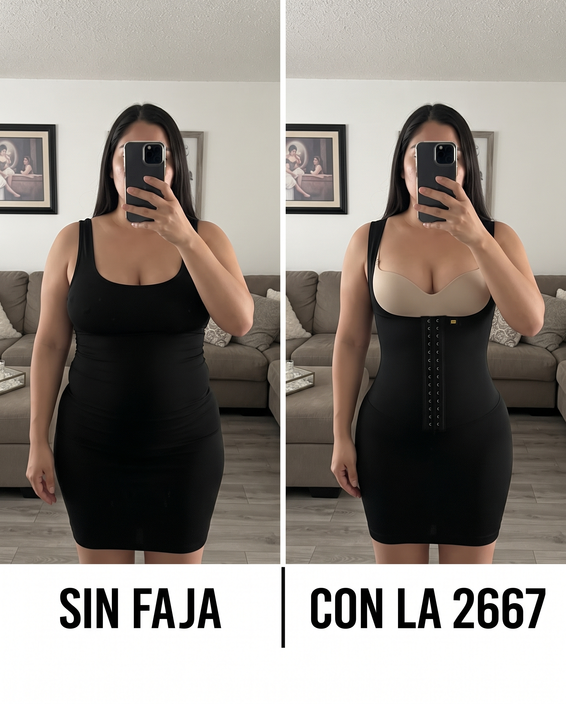

Paso 4 · ¿Meta lo aprueba?
Revisión del 9 de octubre de 2026 contra la política oficial de Meta (Health and Wellness)
Las 3 reglas que más tumban anuncios de fajas
1. No prometer resultados solo por usar la prenda"Reduce medidas", "quema grasa", "baja hasta 10 cm con solo ponértela".
"Claims that results can be achieved solely by using wearable products"
"Claims that results can be achieved solely by using wearable products"
2. No pellizcar la grasa en primer planoAcercamientos a una parte del cuerpo agarrando el gordito.
"Close up on specific body area by pinching fat"
"Close up on specific body area by pinching fat"
3. No hacer sentir inferior a nadie por su cuerpoFrases que hacen sentir mal por cómo se ve.
"Statements of inferiority about physical appearance"
"Statements of inferiority about physical appearance"
La ropa interior sí se permite, siempre que no caiga en desnudos. El antes y después no está prohibido como tal para productos cosméticos, pero si se lee como "bajar de peso" entra en la regla 1. Fuente: Meta · Health and Wellness
La competencia: anuncios que hoy están prendidos y se arriesgan

ROJO · regla 1
Claudia Ramírez: "Reduce medidas" y "Es perfecta para quemar grasa".
Claudia Ramírez: "Reduce medidas" y "Es perfecta para quemar grasa".

ROJO · regla 1
Claudia Ramírez: "Quema de grasa" en la lista.
Claudia Ramírez: "Quema de grasa" en la lista.

ROJO · regla 1
Video de La Colombiana: "Reduce hasta 10 centímetros de la cintura con solo ponértela".
Video de La Colombiana: "Reduce hasta 10 centímetros de la cintura con solo ponértela".

ROJO · regla 1
Video de Maraisa: "máxima compresión para así reducir tallas".
Video de Maraisa: "máxima compresión para así reducir tallas".

AMARILLO · regla 3
Video de Claudia Ramirez Fajas: "si eres una gordita y no te forman los vestidos… se me ve horroroso".
Video de Claudia Ramirez Fajas: "si eres una gordita y no te forman los vestidos… se me ve horroroso".
Que estén prendidos no quiere decir que estén bien. Meta no los revisa todos el primer día: los rechaza cuando los encuentra, y si se repite, restringe la cuenta. La que lleva 161 días con "quema grasa" puede caerse mañana.
Lo nuestro: las 10 imágenes de la 2667

VERDE
Compara fajas, no cuerpos.
Compara fajas, no cuerpos.

VERDE
Solo describe la prenda.
Solo describe la prenda.

VERDE
"Moldea tu figura" habla de forma, no de bajar medidas.
"Moldea tu figura" habla de forma, no de bajar medidas.

VERDE
Producto solo.
Producto solo.

VERDE
Se quitó "reduce medidas" y "quema grasa" de la referencia.
Se quitó "reduce medidas" y "quema grasa" de la referencia.

VERDE
Muestra que no se nota con ropa.
Muestra que no se nota con ropa.

VERDE
Frente y espalda de la prenda.
Frente y espalda de la prenda.

AMARILLO
"Sin faja / con faja" lado a lado puede leerse como bajar de peso. Mejor como "con ropa".
"Sin faja / con faja" lado a lado puede leerse como bajar de peso. Mejor como "con ropa".

AMARILLO
Mismo riesgo: antes y después. Se puede probar, pero con presupuesto bajo primero.
Mismo riesgo: antes y después. Se puede probar, pero con presupuesto bajo primero.

AMARILLO
"Se acabó el gordito de arriba" habla del cuerpo. Más seguro: "Tapa el gordito de arriba".
"Se acabó el gordito de arriba" habla del cuerpo. Más seguro: "Tapa el gordito de arriba".
Y la genérica, la que hizo la IA sin base: trae "Modela, reduce y moldea" y un "antes y después · resultados visibles". ROJO La IA sin base no solo hace algo feo: hace algo que Meta te puede rechazar.
Lo nuestro: los 10 videos para Flow
| Video | Semáforo | Por qué |
|---|---|---|
| 01 Muestra y explica · 03 Prueba en vivo · 05 Cuatro beneficios · 08 Humor · 10 Talla | VERDE | Hablan de la prenda, no del cuerpo. |
| 02 Arranca con el resultado ("Cero gordito arriba") | VERDE | Muestra cómo queda la ropa; no promete bajar medidas. |
| 04 Nombra a quién le habla | AMARILLO | Muestra el gordito saliendo de otra faja. Está bien siempre que no lo pellizque. |
| 06 La mamá ("cuando nada te queda después del bebé") | AMARILLO | Toca la regla 3 y el tema postparto. Probar con presupuesto bajo. |
| 07 Antes y después con vestido | AMARILLO | Antes y después lado a lado. Es lo que más dura en la competencia, pero es lo que más se revisa. |
| Primer prompt de Paula (el del gordito) | ROJO → corregido | La mujer se pellizcaba el gordito (regla 2). Se cambió a que solo lo mira. Lo encontramos revisando, por eso este paso existe. |
El prompt para revisarlo tú mismo (desde la web)
Adjunto mi anuncio. Revísalo contra las políticas de publicidad de Meta para productos de salud y apariencia (Health and Wellness). Dime en un semáforo (verde, amarillo, rojo):
1. ¿Promete resultados solo por usar la prenda? (reduce medidas, quema grasa, bajas tallas)
2. ¿Muestra un acercamiento pellizcando grasa?
3. ¿Hace sentir inferior a alguien por su cuerpo?
4. ¿Tiene un antes y después que se pueda leer como bajar de peso?
Para cada punto en amarillo o rojo, dame la frase o la imagen exacta que lo causa y cómo cambiarla sin perder la fuerza del anuncio.
Joako Estratega · CEO de Joako Estratega (agencia) · CEO de PatoEditor · Director de la estrategia de marketing de Feria Effix
¿Quieres que te ayude con tu negocio? Escríbeme por WhatsApp: +57 302 866 2556 · @joakoestratega · joakoestratega.com
¿Quieres que te ayude con tu negocio? Escríbeme por WhatsApp: +57 302 866 2556 · @joakoestratega · joakoestratega.com